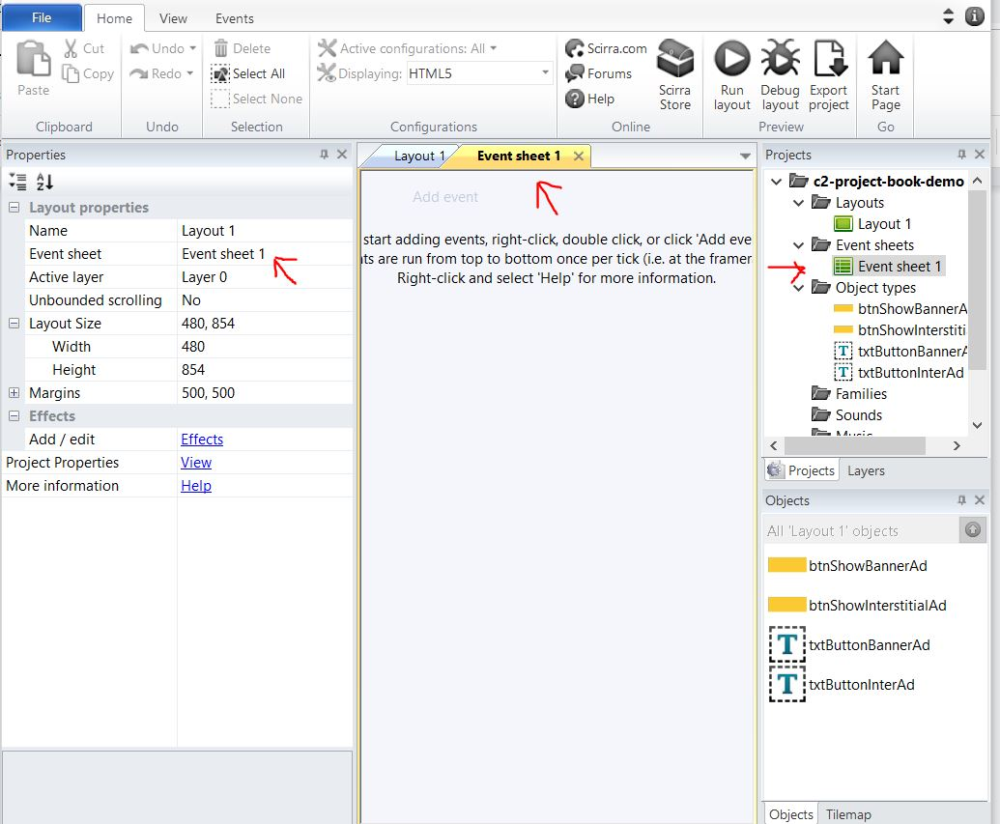
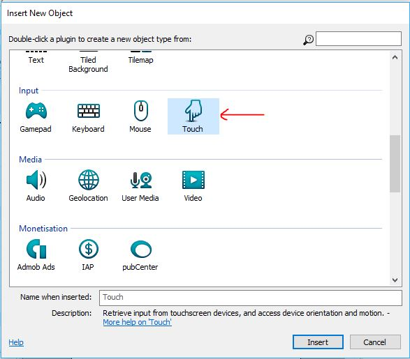
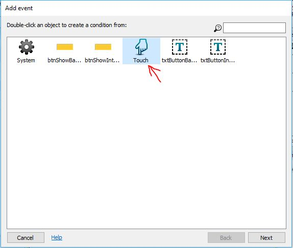
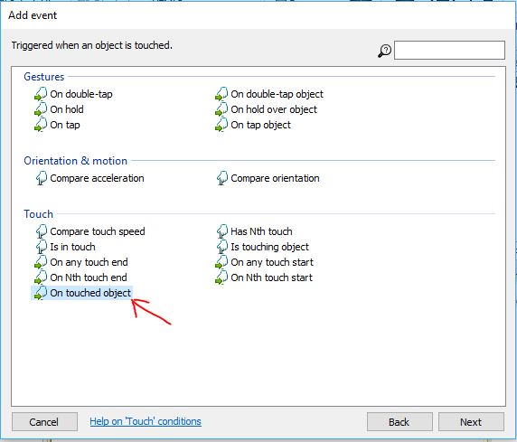
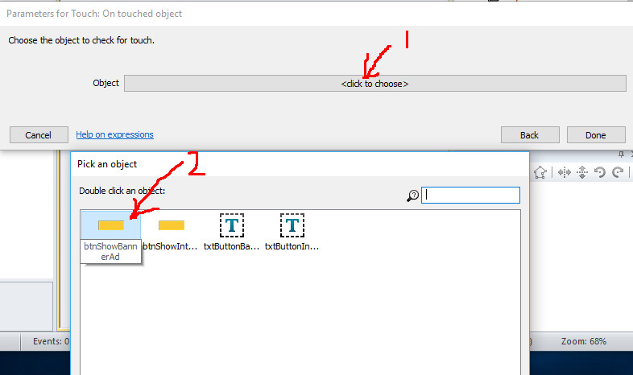
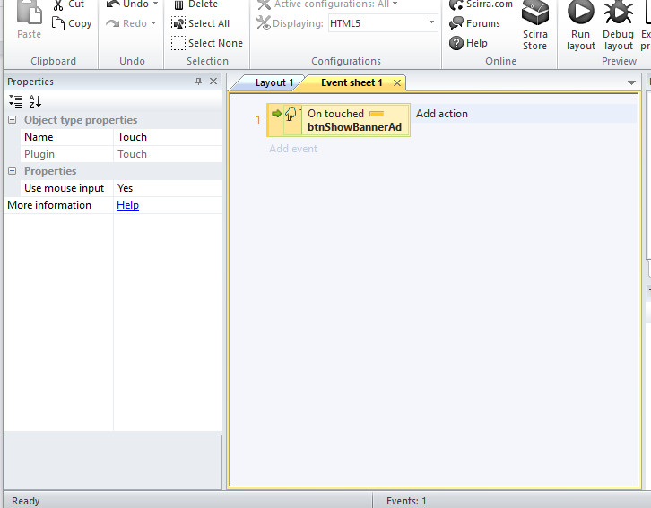

When you created your first layout, Construct 2 also automatically added an event sheet with the default name ‘Event Sheet 1’ as shown in Fig 2-1 below.

We also need to insert a new object called ‘Touch’. See Fig 2- 2 below on how to insert it.

The Touch object enables mouse-clicks and finger touch to be detected. If your game is run on the PC, it will detect mouse- clicks. But if it is run on a mobile device, it will detect finger touches.Next, go back to Event Sheet 1 and click on the ‘Add Event’ button as shown in Fig 2-3 below.
Then, a new dialog opens up called AddEvent dialog. Go ahead and select the Touch object as shown in Fig 2-4 below.

In the next dialog, you will have a choice of a few touch events. Take a look at Fig 2-5 below.

Go ahead and select the ‘On touched object’ event as shown in Fig 2-5 above. You will then see the next dialog which is called ‘Parameters for touch’ as shown in Fig 2-6 below.

From Fig 2-6 above, you will note that you need to first choose the object to check for touch. Then in the second step, select the ‘btnShowBannerAd’ button. After adding the touch event, your Event sheet 1 should look something like Fig 2-7 below.

The next step is to add an action to be taken once the touch event is triggered. We will stop here for this chapter. In the next chapter, we will download and install the AdMob plugin.